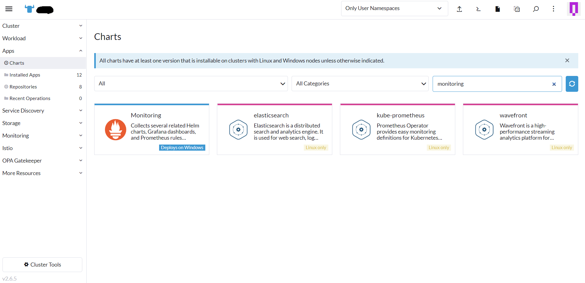
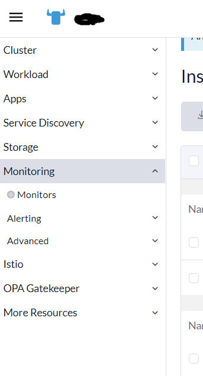
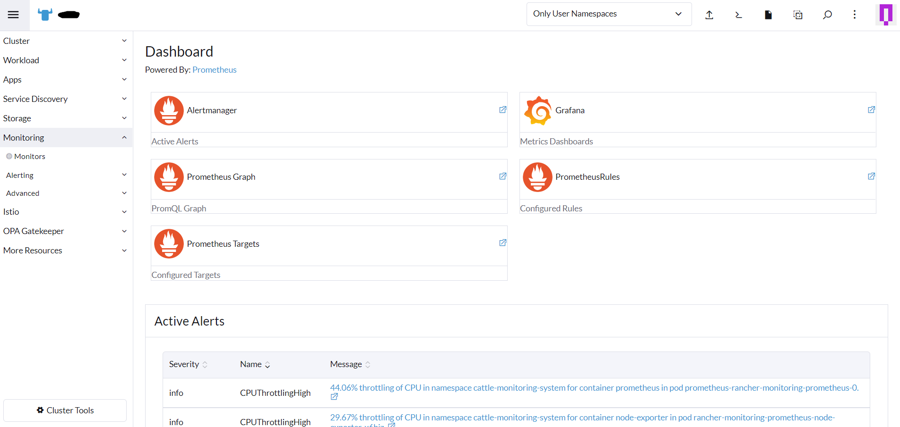
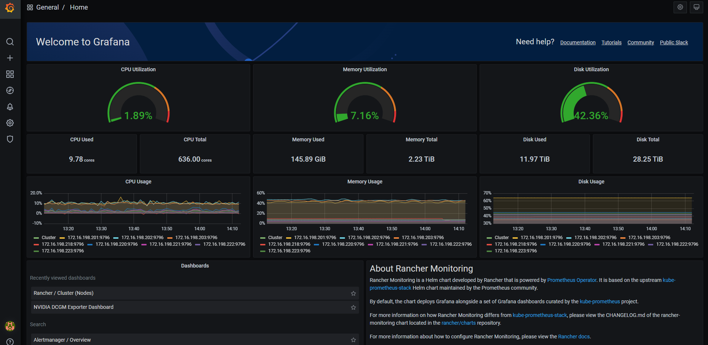
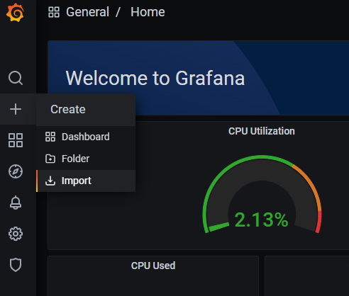
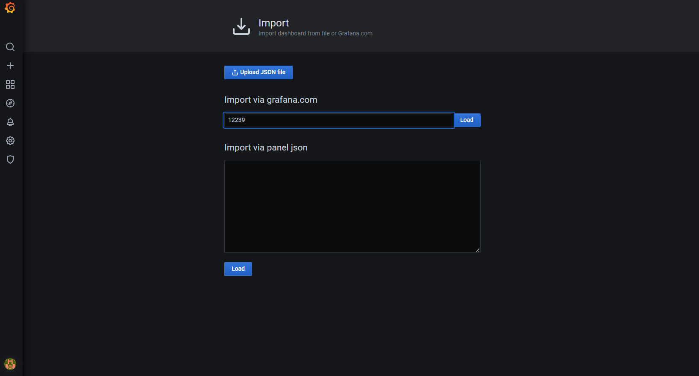
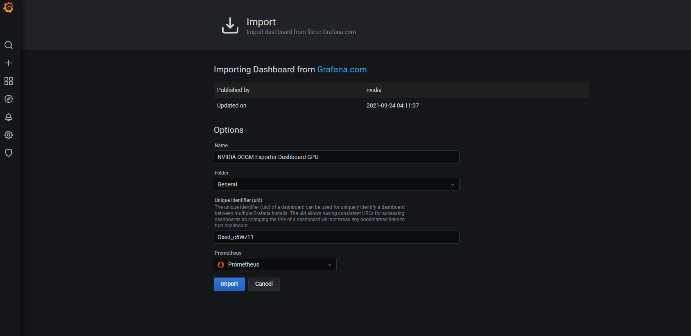
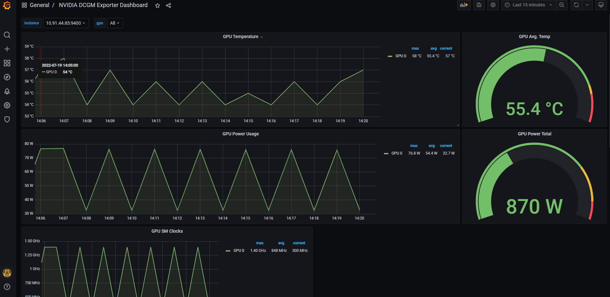

Apps -> Charts 이동후 monitoring 검색

Monitoring 설치
설치를 진행하면 모니터링 앱은 Rancher 의 cattle-monitoring-system namespace 에 배포됨
(설치후 랜처 로그아웃후 다시 로그인)
네비게이션 영역을 보면 Monitoring 메뉴가 추가되어 있음

대쉬보드 확인

grafana 확인

그라파나에 로그인합니다. Grafana 인스턴스의 기본 관리자 사용자 이름과 비밀번호는 입니다 admin/prom-operator. (비밀번호가 있는 사람에 관계없이 Rancher의 클러스터 관리자 권한은 여전히 Grafana 인스턴스에 액세스해야 합니다.) 차트를 배포하거나 업그레이드할 때 대체 자격 증명을 제공할 수도 있습니다.
curl -fsSL -o get_helm.sh https://raw.githubusercontent.com/helm/helm/master/scripts/get-helm-3 && \
chmod 700 get_helm.sh && \
./get_helm.sh
helm repo add gpu-helm-charts \
https://nvidia.github.io/gpu-monitoring-tools/helm-charts
helm repo update
#helm install --generate-name gpu-helm-charts/dcgm-exporter
# orca mlops node를 모니터링하기 위해 tolerations, nodeSelector 수정한 values파일로 설치한다.
helm install -f dcgm-values.yaml --generate-name gpu-helm-charts/dcgm-exporter
$ helm search repo gpu-helm-charts
NAME CHART VERSION APP VERSION DESCRIPTION
gpu-helm-charts/dcgm-exporter 2.4.0 2.4.0 A Helm chart for DCGM exporter
gpu-helm-charts/kube-prometheus 0.0.43 Manifests, dashboards, and alerting rules for e...
gpu-helm-charts/prometheus-operator 0.0.15 Provides easy monitoring definitions for Kubern...
$ helm inspect chart gpu-helm-charts/dcgm-exporter
apiVersion: v2
appVersion: 2.4.0
description: A Helm chart for DCGM exporter
home: https://github.com/nvidia/gpu-monitoring-tools/
icon: https://assets.nvidiagrid.net/ngc/logos/DCGM.png
keywords:
- gpu
- cuda
- compute
- monitoring
- telemetry
- tesla
kubeVersion: '>= 1.13.0-0'
name: dcgm-exporter
sources:
- https://gitlab.com/nvidia/container-toolkit/gpu-monitoring-tools
version: 2.4.0
$ helm inspect values gpu-helm-charts/dcgm-exporter
# Copyright (c) 2020, NVIDIA CORPORATION. All rights reserved.
#
# Licensed under the Apache License, Version 2.0 (the "License");
# you may not use this file except in compliance with the License.
# You may obtain a copy of the License at
#
# http://www.apache.org/licenses/LICENSE-2.0
#
# Unless required by applicable law or agreed to in writing, software
# distributed under the License is distributed on an "AS IS" BASIS,
# WITHOUT WARRANTIES OR CONDITIONS OF ANY KIND, either express or implied.
# See the License for the specific language governing permissions and
# limitations under the License.
image:
repository: nvcr.io/nvidia/k8s/dcgm-exporter
pullPolicy: IfNotPresent
# Image tag defaults to AppVersion, but you can use the tag key
# for the image tag, e.g:
tag: 2.2.9-2.4.0-ubuntu18.04
# Comment the following line to stop profiling metrics from DCGM
arguments: ["-f", "/etc/dcgm-exporter/dcp-metrics-included.csv"]
# NOTE: in general, add any command line arguments to arguments above
# and they will be passed through.
# Use "-r", "<HOST>:<PORT>" to connect to an already running hostengine
# Example arguments: ["-r", "host123:5555"]
# Use "-n" to remove the hostname tag from the output.
# Example arguments: ["-n"]
# Use "-d" to specify the devices to monitor. -d must be followed by a string
# in the following format: [f] or [g[:numeric_range][+]][i[:numeric_range]]
# Where a numeric range is something like 0-4 or 0,2,4, etc.
# Example arguments: ["-d", "g+i"] to monitor all GPUs and GPU instances or
# ["-d", "g:0-3"] to monitor GPUs 0-3.
imagePullSecrets: []
nameOverride: ""
fullnameOverride: ""
serviceAccount:
# Specifies whether a service account should be created
create: true
# Annotations to add to the service account
annotations: {}
# The name of the service account to use.
# If not set and create is true, a name is generated using the fullname template
name:
podSecurityContext: {}
# fsGroup: 2000
securityContext:
runAsNonRoot: false
runAsUser: 0
capabilities:
add: ["SYS_ADMIN"]
# readOnlyRootFilesystem: true
service:
type: ClusterIP
port: 9400
address: ":9400"
# Annotations to add to the service
annotations: {}
resources: {}
# limits:
# cpu: 100m
# memory: 128Mi
# requests:
# cpu: 100m
# memory: 128Mi
serviceMonitor:
enabled: true
interval: 15s
additionalLabels: {}
#monitoring: prometheus
mapPodsMetrics: false
nodeSelector: {}
#node: gpu
tolerations: []
#- operator: Exists
affinity: {}
#nodeAffinity:
# requiredDuringSchedulingIgnoredDuringExecution:
# nodeSelectorTerms:
# - matchExpressions:
# - key: nvidia-gpu
# operator: Exists
extraHostVolumes: []
#- name: host-binaries
# hostPath: /opt/bin
extraVolumeMounts: []
#- name: host-binaries
# mountPath: /opt/bin
# readOnly: true
extraEnv: []
#- name: EXTRA_VAR
# value: "TheStringValue"
$ helm ls
NAME NAMESPACE REVISION UPDATED STATUS CHART APP VERSION
dcgm-exporter-1658202339 default 1 2022-07-19 12:45:40.1694572 +0900 KST deployed dcgm-exporter-2.4.0 2.4.0
$ helm delete dcgm-exporter-1658202339
$ kubectl get pods -A | grep exporter
cattle-monitoring-system rancher-monitoring-prometheus-node-exporter-6q7pp 1/1 Running 0 56m
cattle-monitoring-system rancher-monitoring-prometheus-node-exporter-8bmpz 1/1 Running 0 56m
cattle-monitoring-system rancher-monitoring-prometheus-node-exporter-8xrk6 1/1 Running 0 56m
cattle-monitoring-system rancher-monitoring-prometheus-node-exporter-blvhr 1/1 Running 0 56m
cattle-monitoring-system rancher-monitoring-prometheus-node-exporter-kc4ql 1/1 Running 0 56m
cattle-monitoring-system rancher-monitoring-prometheus-node-exporter-l56nm 1/1 Running 0 56m
cattle-monitoring-system rancher-monitoring-prometheus-node-exporter-qkk82 1/1 Running 0 56m
cattle-monitoring-system rancher-monitoring-prometheus-node-exporter-s654d 1/1 Running 0 56m
cattle-monitoring-system rancher-monitoring-prometheus-node-exporter-x6hjz 1/1 Running 0 56m
default dcgm-exporter-1658202339-6wwlg 0/1 CrashLoopBackOff 6 5m22s
default dcgm-exporter-1658202339-ffch6 0/1 CrashLoopBackOff 6 5m22s
default dcgm-exporter-1658202339-kgldt 0/1 CrashLoopBackOff 7 5m22s
default dcgm-exporter-1658202339-nprlc 0/1 CrashLoopBackOff 6 5m22s
$ kubectl logs dcgm-exporter-1658205662-qwhs9
time="2022-07-19T03:50:16Z" level=info msg="Starting dcgm-exporter"
time="2022-07-19T03:50:16Z" level=info msg="DCGM successfully initialized!"
time="2022-07-19T03:50:16Z" level=info msg="Collecting DCP Metrics"
time="2022-07-19T03:50:16Z" level=info msg="Kubernetes metrics collection enabled!"
time="2022-07-19T03:50:16Z" level=info msg="Pipeline starting"
time="2022-07-19T03:50:16Z" level=info msg="Starting webserver"
$ kubectl describe pod dcgm-exporter-1658205662-qwhs9
......
Events:
Type Reason Age From Message
---- ------ ---- ---- -------
Normal Scheduled 29m default-scheduler Successfully assigned default/dcgm-exporter-1658205662-qwhs9 to hcidc-sv-paz-orca-worker-09
Normal Pulled 29m kubelet Container image "nvcr.io/nvidia/k8s/dcgm-exporter:2.2.9-2.4.0-ubuntu18.04" already present on machine
Normal Created 29m kubelet Created container exporter
Normal Started 29m kubelet Started container exporter
Warning Unhealthy 28m (x3 over 29m) kubelet Readiness probe failed: HTTP probe failed with statuscode: 503
$ kubectl edit daemonset.apps/dcgm-exporter-1658205662
# initialDelaySeconds를 60으로 변경
.......
livenessProbe:
failureThreshold: 3
httpGet:
path: /health
port: 9400
scheme: HTTP
initialDelaySeconds: 60
periodSeconds: 5
successThreshold: 1
timeoutSeconds: 1
DCGM Exporter Dashboard 설치
https://grafana.com/grafana/dashboards/12239
Import 선택

dashboard id(12239) 입력

Prometheus 선택

Dashboard 확인
